01
Connected Fields · Marker
- Seed
- AA-20261024-01-19688
- Series
- Connected Fields
- Format
- Landscape · 1400 × 1000
- Additional φ pull
- 97%
- Material
- Marker
- Palette
- primary
Can one number compose a drawing?
18 drawings made on 24 October 2026. Different materials, different compositions, and room to make each one your own.


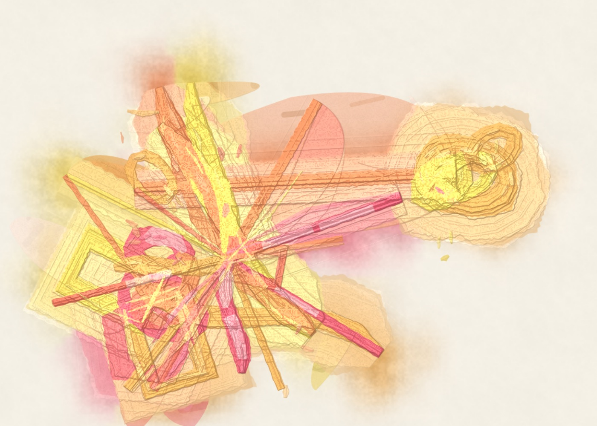
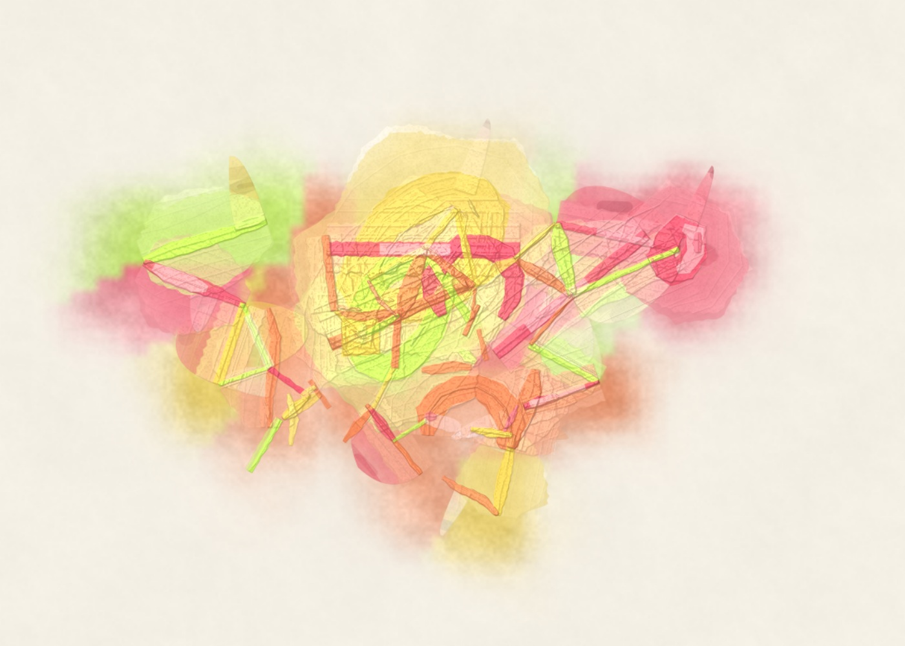
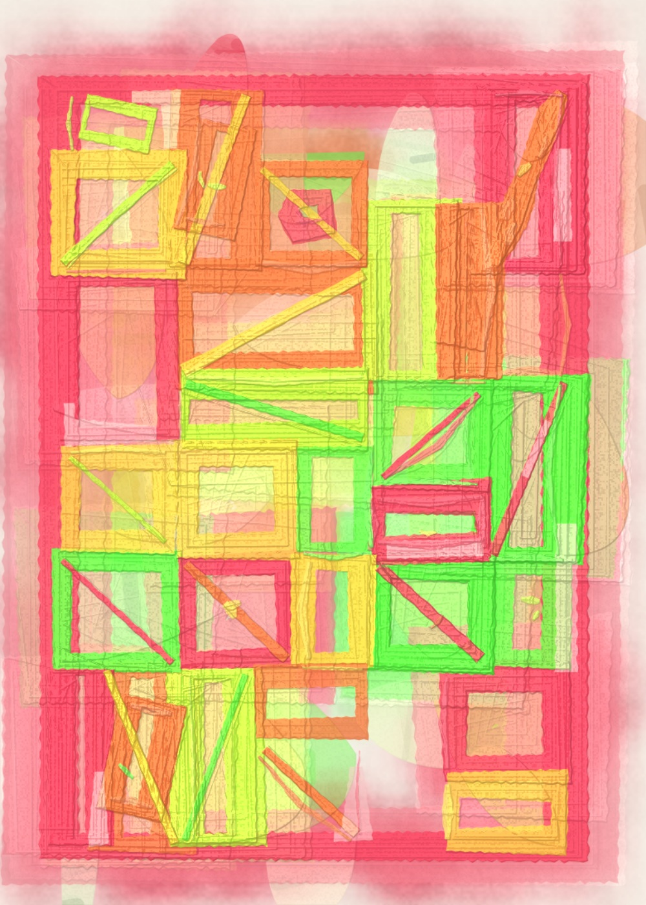
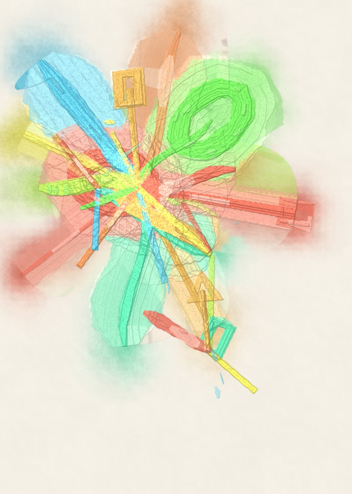
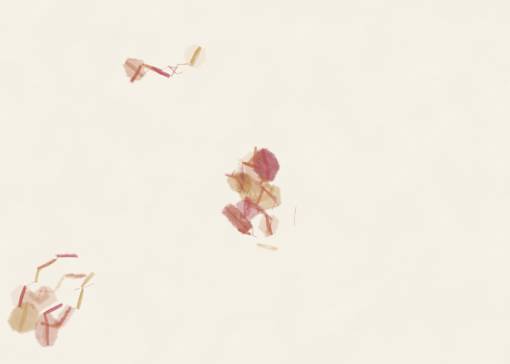
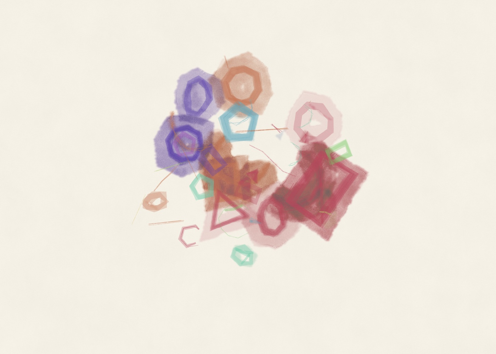
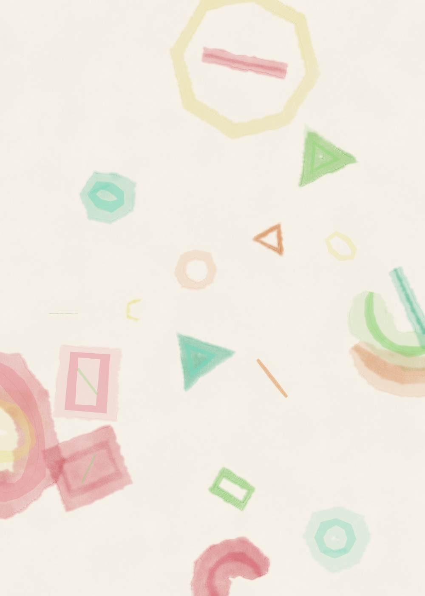
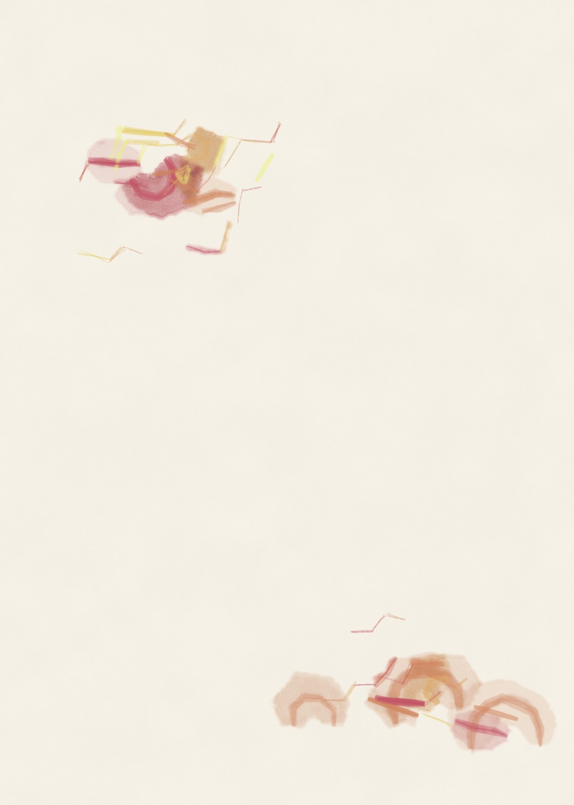
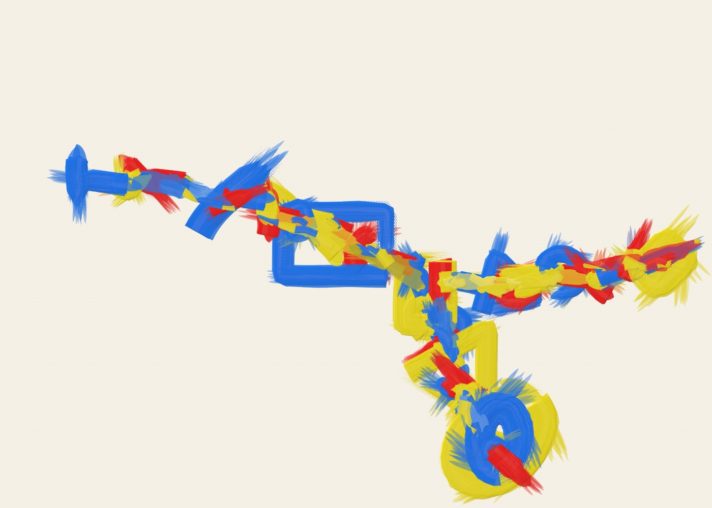
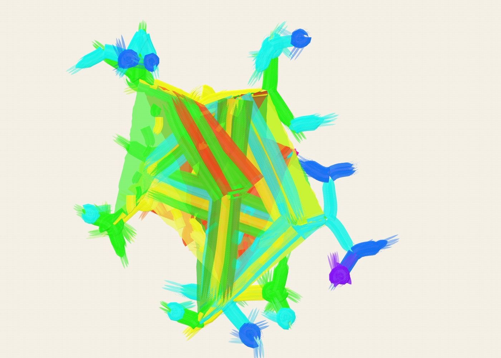
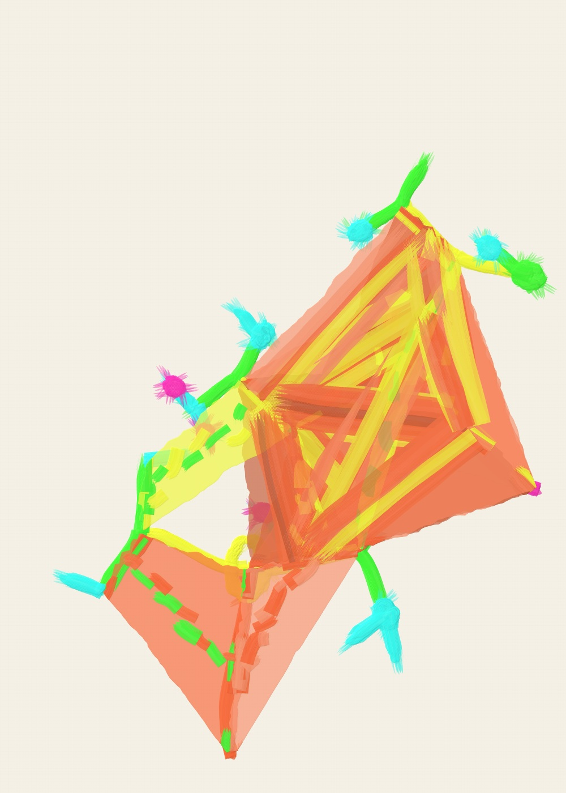
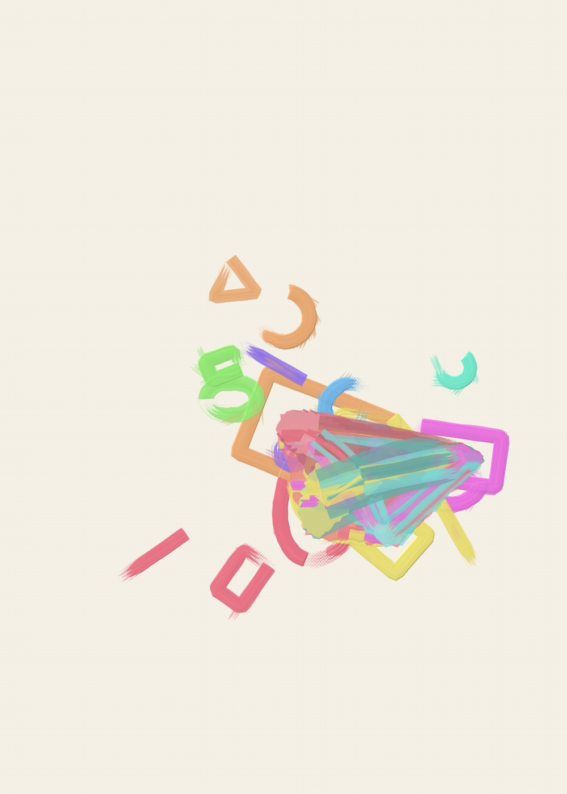
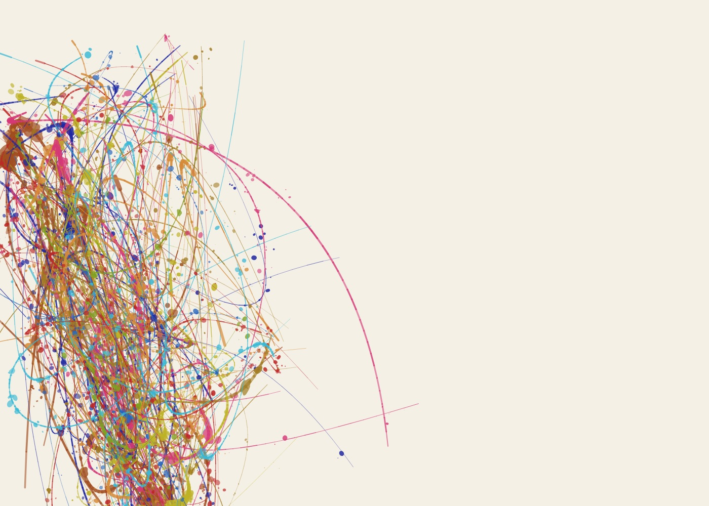
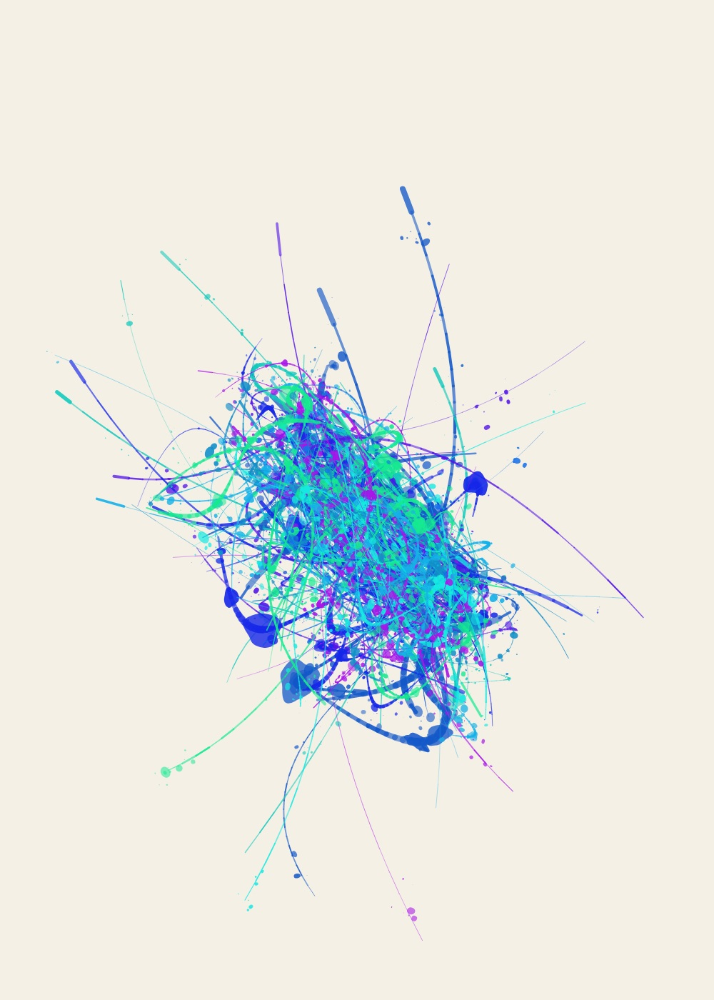
The golden ratio helps arrange each drawing. The material changes how those arrangements feel. Open a piece to see its settings, then change whatever you like.
MAKE YOUR OWN →